Nom, ville, site, téléphone, email si déjà trouvé.
01 · Vision
01. Je transforme une base Google en base vérifiable
Je repars des leads collectés avec Serper et Google Maps. Cette fois, je ne cherche pas encore les emails : je vérifie qui existe vraiment derrière chaque fiche.
02 · Positionnement
02. data.gouv est une couche de vérité
Une base de prospection devient beaucoup plus solide quand elle contient une identité légale fiable.
SIREN, SIRET, raison sociale, APE, statut, dirigeants.
Un fichier prêt pour Apify et la prospection.
03 · Avant / après
03. Je ne veux plus une liste floue
Un nom Google Maps est utile, mais il ne suffit pas pour industrialiser une prospection.
Avant
Restaurant trouvé sur Google, nom commercial approximatif, adresse parfois incomplète.
Après
Entreprise reliée à un SIREN/SIRET, activité officielle, statut actif et niveau de confiance.
04 · Source
04. Le fichier de départ contient déjà une logique commerciale
Les scores et les segments ne sont pas perdus. Je veux ajouter les données officielles sans écraser les informations utiles déjà présentes.
05 · Règle
05. Je conserve toutes les colonnes existantes
L'enrichissement ne doit jamais casser le travail de la séance précédente.
- 01
Je garde `lead_id` comme repère stable.
- 02
Je garde `email`, `phone`, `website` et `domain`.
- 03
J'ajoute uniquement des colonnes avec le préfixe `dg_`.
- 04
Je garde les notes et les sources pour contrôler le résultat.
06 · Colonnes
06. Les colonnes Serper qui servent au matching
Je donne à Codex les champs qui permettent de croiser les données publiques.
| Colonne | Utilité | Risque |
|---|---|---|
| company_name | Recherche textuelle | Nom commercial différent de la raison sociale |
| address + city | Géocodage et proximité | Adresse partagée par plusieurs sociétés |
| website / domain | Signal de contexte | Pas toujours présent |
| category / segment | Filtre d'activité | Catégorie Google parfois vague |
| priority_score | Priorisation commerciale | Ne prouve pas l'existence légale |
07 · Principe
07. Le but n'est pas de faire joli
Je veux une base qui me dit quoi faire ensuite.
Un lead est exploitable quand je sais pourquoi je lui fais confiance.
08 · Onglets
08. Le classeur doit rester lisible
Je garde des onglets utiles : dashboard, all leads, avec email, sans email, heatmap et segments. L'enrichissement data.gouv doit s'intégrer dans cette logique.
09 · Chaîne
09. La chaîne complète est simple
Je passe d'une donnée commerciale à une donnée légale, puis je prépare l'étape de contact.
leads-massif.xlsxAPI AdresseRecherche entreprisesmatchingdg_*READY_FOR_APIFY
10 · Attention
10. data.gouv ne remplace pas Apify
data.gouv ne va pas inventer les emails manquants. Il fiabilise l'entreprise. Les emails viendront ensuite avec une source de contact dédiée.
11 · Exploration
11. Je pars de la plateforme data.gouv
Je vérifie d'abord ce qui existe publiquement avant de demander à Codex d'automatiser. Comprendre la source évite de faire un prompt abstrait.
12 · Catalogue
12. Le catalogue contient bien plus que SIRENE
Je vois les jeux de données, les fichiers, les organisations et les APIs. Pour la séance, je me concentre sur les entreprises, mais je garde en tête les autres usages.
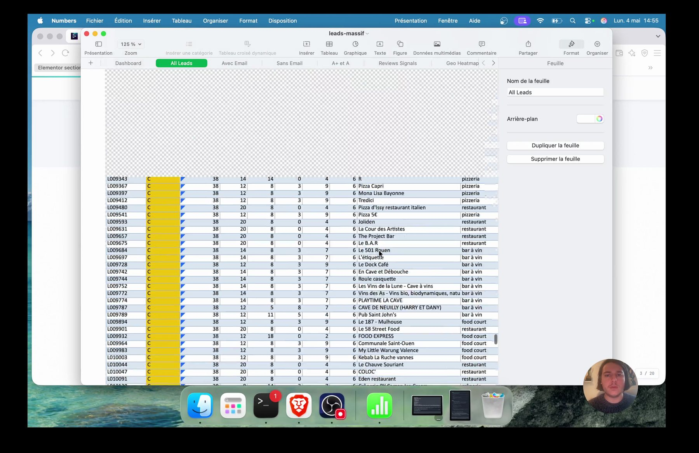
13 · Sources
13. Les deux sources utiles maintenant
Pour un premier enrichissement robuste, je n'ai pas besoin d'un écosystème compliqué.
Nettoyer l'adresse, récupérer code postal, coordonnées et score BAN.
Trouver l'établissement légal, les dirigeants et les informations publiques.
Prendre le relais quand l'API seule ne couvre pas assez de lignes.
14 · INSEE
14. L'INSEE est la source centrale
Je repère l'organisation INSEE et ses APIs. L'intérêt est clair : je peux interroger des données officielles sans clé payante.
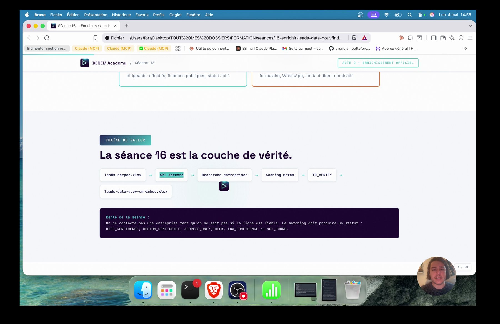
15 · Preuve
15. Je vérifie la nature des données
La description de l'INSEE confirme que les données concernent l'économie et les sociétés françaises. Je peux les utiliser pour fiabiliser la base.
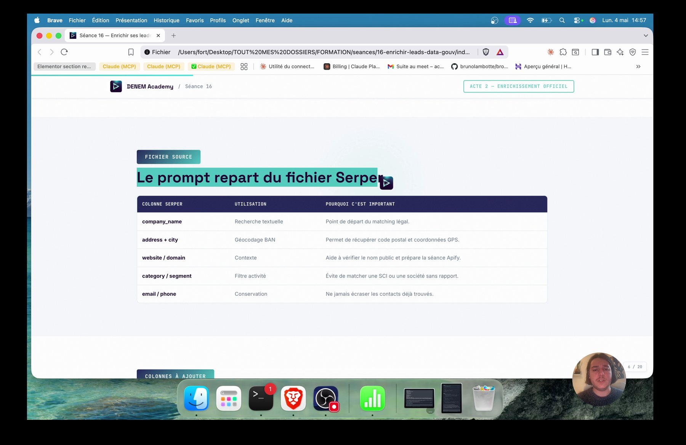
16 · APIs
16. Ce que chaque API apporte
Je sépare les rôles pour éviter les requêtes inutiles.
| API | Entrée | Sortie |
|---|---|---|
| API Adresse | Adresse + ville | Adresse normalisée, code postal, latitude, longitude |
| Recherche entreprises | Nom + ville + code postal | SIREN, SIRET, raison sociale, activité, dirigeants |
| near_point | Latitude + longitude | Établissements proches quand la recherche textuelle échoue |
17 · Réutilisations
17. Les réutilisations donnent des idées
Je regarde les projets publiés sur data.gouv. Ça montre qu'une donnée publique peut devenir un outil, un mini-site ou un actif SEO.
18 · Inspiration
18. Une source peut devenir un produit
Les exemples de réutilisation montrent une autre compétence : créer un service à partir d'une API publique. Pour l'instant, je reste concentré sur la base de leads.
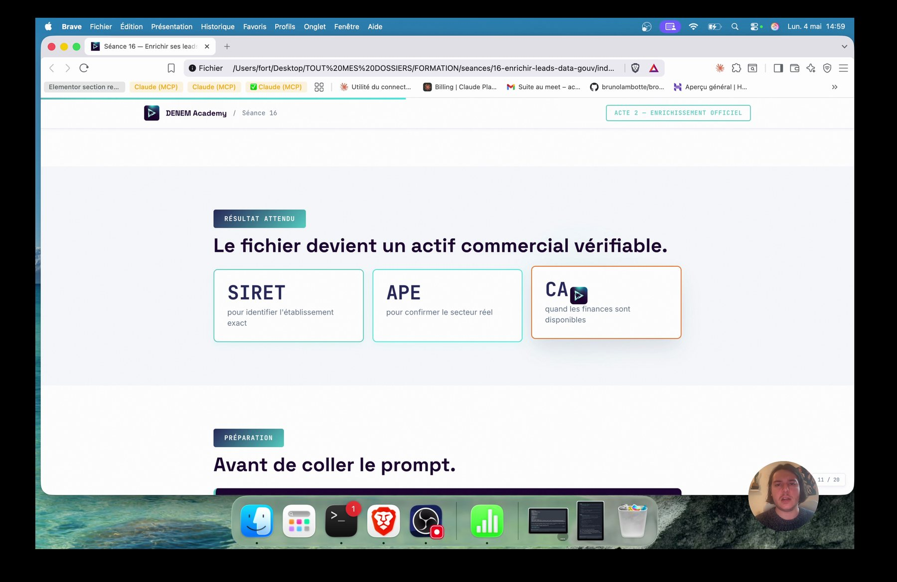
19 · Données populaires
19. Je repère les datasets à fort potentiel
Les datasets populaires comme DVF ou SIRENE montrent que les données publiques peuvent alimenter des analyses, des cartes, des bases clients et des outils.
20 · API SIRENE
20. Je localise l'API qui va servir au matching
La recherche SIRENE est la porte d'entrée naturelle pour retrouver les entreprises françaises et leurs établissements.
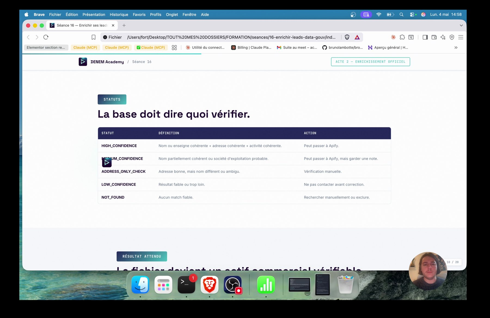
21 · Dataset
21. Je lis aussi les pages de dataset
Même quand un dataset n'est pas celui de la séance, la structure est utile : licence, fichiers, mises à jour, métriques et ressources.
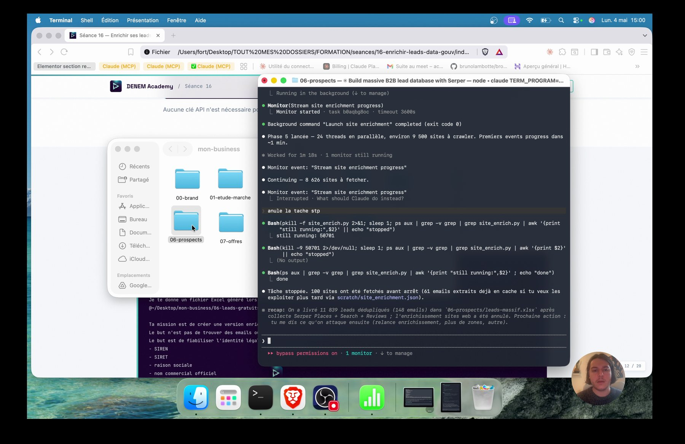
22 · Fichiers
22. Les fichiers publics peuvent être énormes
Je comprends pourquoi l'API ne suffit pas toujours. Parfois, il faut télécharger un fichier massif, filtrer localement et matcher soi-même.
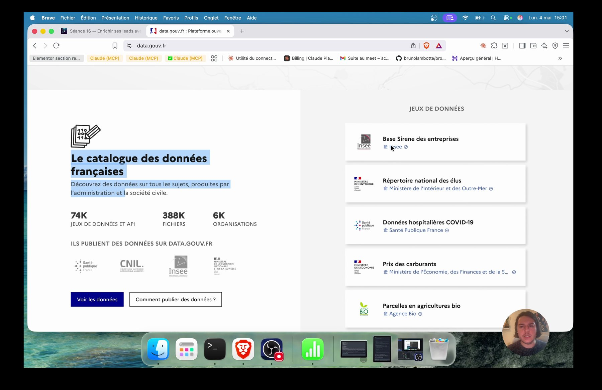
23 · URLs
23. Les métadonnées sont réutilisables par script
Les URLs stables et les identifiants permettent à Codex de télécharger, journaliser et reprendre une tâche sans refaire tout le travail.
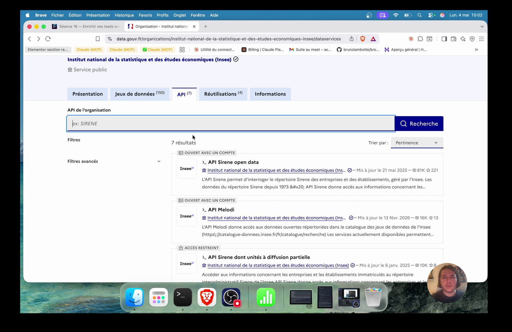
24 · Méthode
24. Je n'automatise pas une source que je ne comprends pas
Avant de lancer Codex, je veux savoir ce que je demande.
Une bonne automatisation commence par une source comprise, pas par un prompt long.
25 · Prompt maître
25. Le prompt complet cadre toute la mission
Ce prompt sert à transformer le fichier Serper en classeur enrichi avec data.gouv. Il donne le rôle, les APIs, les colonnes à préserver, les colonnes à ajouter et les fichiers de sortie.
Prompt à copier
Tu es un data engineer B2B senior, spécialiste de l'enrichissement de bases de leads françaises avec les données publiques officielles.
MISSION
Je te donne un fichier Excel généré lors de la séance Serper :
@~/Desktop/mon-business/06-leads-gratuits/leads-serper.xlsx
Ta mission est de créer une version enrichie avec data.gouv et les APIs publiques françaises.
Le but n'est pas de trouver des emails ou des numéros de téléphone.
Le but est de fiabiliser l'identité légale de chaque lead :
- SIREN
- SIRET
- raison sociale
- nom commercial officiel
- code APE / NAF
- statut actif ou fermé
- date de création
- tranche d'effectif
- catégorie entreprise
- dirigeants publics quand disponibles
- chiffre d'affaires et résultat net quand disponibles
- adresse officielle
- latitude / longitude
- score de confiance du matching
APIS AUTORISÉES
1. API Adresse :
https://api-adresse.data.gouv.fr/search/
2. API Recherche d'entreprises :
https://recherche-entreprises.api.gouv.fr/search
https://recherche-entreprises.api.gouv.fr/near_point
Tu dois respecter les limites raisonnables d'appel.
Mets un délai court entre les appels.
Cache les réponses JSON pour ne pas répéter les mêmes requêtes.
Ne contourne aucune restriction.
FICHIER D'ENTRÉE
Lis l'onglet principal du fichier :
~/Desktop/mon-business/06-leads-gratuits/leads-serper.xlsx
Colonnes importantes à utiliser si elles existent :
- lead_id
- company_name
- segment
- category
- website
- domain
- email
- phone
- address
- city
- postal_code
- google_rating
- google_review_count
- cid
- source_urls
- source_queries
- source_endpoints
- priority_score
- priority_class
- personalized_angle
- outreach_message
CONTRAINTE IMPORTANTE
Tu dois conserver toutes les colonnes existantes.
Tu ne dois jamais écraser email, phone, website, source_urls ou outreach_message.
Tu ajoutes uniquement des colonnes avec le préfixe dg_.
COLONNES À AJOUTER
Ajoute au minimum :
- dg_siren
- dg_siret
- dg_raison_sociale
- dg_nom_commercial
- dg_code_ape
- dg_activite
- dg_section_activite
- dg_statut
- dg_date_creation
- dg_tranche_effectif
- dg_categorie_entreprise
- dg_dirigeant_nom
- dg_dirigeant_role
- dg_ca_dernier
- dg_ca_annee
- dg_resultat_net_dernier
- dg_resultat_net_annee
- dg_adresse_officielle
- dg_code_postal_officiel
- dg_ville_officielle
- dg_latitude
- dg_longitude
- dg_distance_m
- dg_match_score
- dg_match_status
- dg_match_method
- dg_source_url
- dg_notes
STRUCTURE DE SORTIE
Crée ou complète ce dossier :
~/Desktop/mon-business/07-enrichissement-data-gouv/
Crée :
- leads-data-gouv-enriched.xlsx
- leads-data-gouv-enriched.csv
- rapport-data-gouv.md
- data-gouv-cache/
- data-gouv-cache/adresse/
- data-gouv-cache/search/
- data-gouv-cache/near-point/
- data-gouv-ledger.csv
MÉTHODE PAR LIGNE
PHASE 1 — NORMALISATION
Pour chaque lead :
1. Nettoie company_name :
- supprime les emojis
- retire les suffixes marketing inutiles
- garde aussi le nom original
2. Nettoie address et city.
3. Si postal_code est vide, ne l'invente pas. Il sera récupéré via géocodage.
4. Normalise domain depuis website si besoin.
5. Crée une clé de cache stable par lead_id.
PHASE 2 — GÉOCODAGE ADRESSE
Si address et city existent :
Appelle l'API Adresse avec :
q = address + city
limit = 1
Récupère :
- adresse normalisée
- code postal
- code commune
- latitude
- longitude
- score BAN
Si l'API Adresse ne trouve rien :
- continue quand même avec recherche par nom + ville
- note dg_notes = "adresse non géocodée"
PHASE 3 — RECHERCHE TEXTUELLE ENTREPRISE
Interroge l'API Recherche d'entreprises avec plusieurs stratégies :
Stratégie A :
q = company_name + city
code_postal = code postal disponible
etat_administratif = A
Stratégie B :
q = company_name nettoyé
code_postal = code postal disponible
etat_administratif = A
Stratégie C :
q = company_name + address + city
etat_administratif = A
Pour les restaurants, bars, traiteurs, cafés ou hôtels-restaurants :
ajoute si utile :
section_activite_principale = I
et priorise les codes :
- 56.10A
- 56.10B
- 56.10C
- 56.30Z
- 55.10Z seulement si le lead est hôtel ou hébergement
PHASE 4 — RECHERCHE GÉOGRAPHIQUE
Si le matching textuel est faible mais que tu as latitude/longitude :
Appelle :
/near_point
lat = latitude BAN
long = longitude BAN
radius = 0.08 à 0.20 km selon densité
section_activite_principale = I si le lead est restaurant / bar / traiteur
Attention :
Un résultat à la même adresse ne suffit pas.
Une adresse peut contenir plusieurs sociétés.
Le résultat géographique doit être comparé au nom commercial, aux enseignes, à l'activité et au statut.
PHASE 5 — SCORING DE MATCHING
Calcule dg_match_score sur 100 :
- +35 si le nom commercial, l'enseigne ou la raison sociale ressemble fortement au company_name
- +20 si une partie distinctive du nom est retrouvée
- +20 si l'adresse correspond
- +15 si distance inférieure à 50 mètres
- +10 si code APE cohérent avec le secteur
- +5 si établissement actif
- -25 si la seule preuve est l'adresse
- -30 si le code APE est manifestement incohérent
- -40 si l'entreprise est fermée
Définis dg_match_status :
- HIGH_CONFIDENCE : score >= 85 ET nom/enseigne cohérent ET adresse cohérente
- MEDIUM_CONFIDENCE : score 65 à 84 avec cohérence raisonnable
- ADDRESS_ONLY_CHECK : adresse ou distance cohérente mais nom différent
- LOW_CONFIDENCE : score inférieur à 65 ou forte ambiguïté
- NOT_FOUND : aucun résultat exploitable
PHASE 6 — EXTRACTION DES DONNÉES
Pour le meilleur candidat :
Récupère :
- siren
- siret de l'établissement correspondant
- nom_complet
- nom_raison_sociale
- nom_commercial
- activité principale
- section activité
- état administratif
- date création
- tranche effectif
- catégorie entreprise
- adresse officielle
- latitude / longitude officielle
- dirigeants
- finances si présentes
Dirigeants :
Priorise les rôles :
1. Président
2. Gérant
3. Directeur général
4. Représentant légal
Ne mets pas les commissaires aux comptes comme décideur commercial.
Si plusieurs dirigeants pertinents existent, garde le principal dans dg_dirigeant_nom et note les autres dans dg_notes.
Finances :
Si plusieurs années existent, prends la plus récente.
Renseigne :
- dg_ca_dernier
- dg_ca_annee
- dg_resultat_net_dernier
- dg_resultat_net_annee
PHASE 7 — CLASSEUR EXCEL
Crée leads-data-gouv-enriched.xlsx avec ces onglets :
1. DATA_GOUV_DASHBOARD
KPIs :
- total leads
- enrichis avec SIREN
- enrichis avec SIRET
- HIGH_CONFIDENCE
- MEDIUM_CONFIDENCE
- ADDRESS_ONLY_CHECK
- LOW_CONFIDENCE
- NOT_FOUND
- taux d'enrichissement
- taux prêt pour Apify
Graphiques :
- répartition dg_match_status
- top codes APE
- top villes officielles
- effectifs par tranche
2. ALL_LEADS_ENRICHED
Toutes les lignes d'origine + colonnes dg_.
3. READY_FOR_APIFY
Seulement :
dg_match_status = HIGH_CONFIDENCE ou MEDIUM_CONFIDENCE
et website ou domain non vide.
4. TO_VERIFY
Toutes les lignes :
MEDIUM_CONFIDENCE
ADDRESS_ONLY_CHECK
LOW_CONFIDENCE
avec dg_notes et la raison de doute.
5. NOT_FOUND
Lignes sans match fiable.
6. DIRIGEANTS
Une ligne par dirigeant trouvé :
lead_id, company_name, dg_siren, dg_siret, nom, rôle, type_dirigeant, source.
7. FINANCES
lead_id, company_name, dg_siren, année, CA, résultat net.
8. DATA_GOUV_LEDGER
Toutes les requêtes :
timestamp, lead_id, api, query, status, result_count, cache_file.
9. SCORING_RULES
Explique clairement la méthode de matching.
MISE EN FORME
- filtres sur les tableaux
- première ligne figée
- colonnes lisibles
- couleurs par dg_match_status
- aucune clé ou donnée secrète
- notes claires pour les lignes à vérifier
RAPPORT MARKDOWN
Crée rapport-data-gouv.md avec :
- résumé de la méthode
- nombre de leads traités
- nombre de SIREN trouvés
- nombre de SIRET trouvés
- taux HIGH_CONFIDENCE
- top erreurs de matching
- recommandations pour améliorer le fichier source
- limites de data.gouv
- suite recommandée : enrichissement Apify
CONFORMITÉ
N'utilise que les données publiquement diffusées par les APIs.
Respecte les statuts de diffusion partielle.
Ne collecte aucune donnée sensible.
Ne transforme pas ces données en spam.
Garde la source de chaque donnée.
CONTRÔLE FINAL
Avant de finir :
- vérifie que le XLSX s'ouvre
- vérifie que les colonnes dg_ existent
- vérifie que READY_FOR_APIFY ne contient que des leads avec site ou domaine
- vérifie que TO_VERIFY contient les cas ambigus
- vérifie que dg_match_score est entre 0 et 100
- vérifie qu'aucune colonne d'origine n'a été supprimée
MESSAGE FINAL
Réponds seulement avec :
"Enrichissement data.gouv terminé.
Fichiers :
- leads-data-gouv-enriched.xlsx
- leads-data-gouv-enriched.csv
- rapport-data-gouv.md
Leads traités : X
SIREN trouvés : Y
SIRET trouvés : Z
HIGH_CONFIDENCE : A
MEDIUM_CONFIDENCE : B
À vérifier : C
Non trouvés : D
Prêts pour Apify : E"26 · Rôle
26. Je donne un rôle technique précis
Je ne demande pas seulement d'enrichir. Je demande d'agir comme data engineer B2B senior.
Structurer le fichier, les caches, les logs et le XLSX.
Comprendre les leads, les segments et les priorités commerciales.
Respecter les sources officielles et les limites d'appel.
27 · Contraintes
27. Les contraintes protègent le fichier
Je dois dire explicitement ce qui ne doit pas bouger.
- 01
Ne pas écraser `email`.
- 02
Ne pas écraser `phone`.
- 03
Ne pas écraser `website`.
- 04
Ne pas supprimer `source_urls`.
- 05
Ne pas remplacer les angles de prospection.
28 · dg_*
28. Les colonnes dg_* rendent l'enrichissement identifiable
Le préfixe évite de confondre ce qui vient de Serper avec ce qui vient de data.gouv.
| Famille | Colonnes | Usage |
|---|---|---|
| Identité | dg_siren, dg_siret, dg_raison_sociale | Relier le lead à l'entreprise officielle |
| Activité | dg_code_ape, dg_activite, dg_statut | Savoir si le lead correspond au secteur |
| Taille | dg_tranche_effectif, dg_categorie_entreprise | Comprendre le potentiel |
| Matching | dg_match_score, dg_match_status, dg_notes | Décider quoi faire ensuite |
29 · Prompt visible
29. Le prompt n'est pas juste une consigne
Je construis une procédure complète : phases, caches, API, onglets, rapport, contrôle final. Plus le prompt est opérable, plus Codex peut travailler sans ambiguïté.
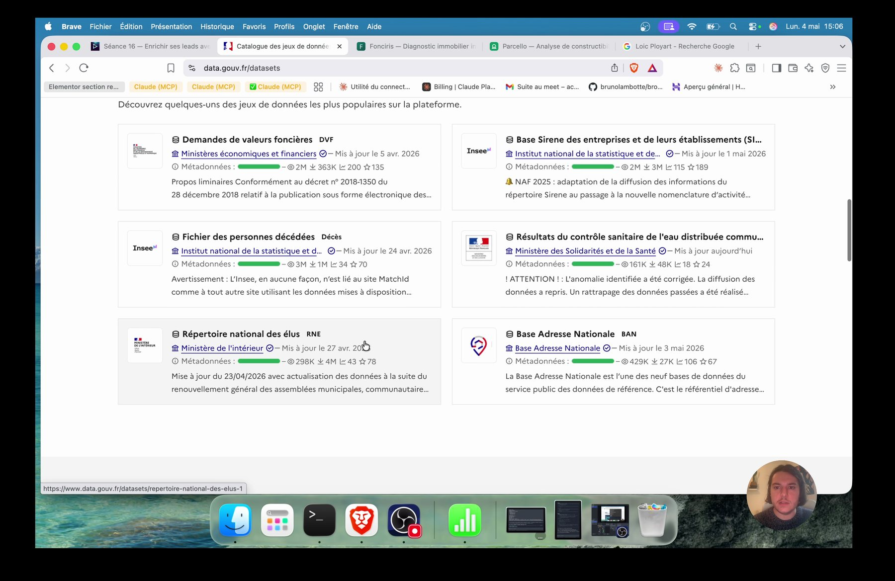
30 · Phases
30. Le prompt suit un ordre exécutable
Chaque phase a un rôle clair. Je ne laisse pas l'agent deviner la méthode.
normalisergéocodercherchernear_pointscorerextraireexportercontrôler
31 · Matching
31. Une adresse ne suffit jamais
Une même adresse peut héberger plusieurs sociétés. Le prompt doit croiser nom, enseigne, activité, distance et statut actif.
32 · Statuts
32. Je force Codex à classer la confiance
Les statuts m'évitent de lire 11 839 lignes une par une.
| Statut | Signal | Décision |
|---|---|---|
| HIGH_CONFIDENCE | Nom + adresse + activité cohérents | Prêt pour Apify |
| MEDIUM_CONFIDENCE | Cohérence raisonnable | Exploitable avec prudence |
| ADDRESS_ONLY_CHECK | Adresse bonne, nom ambigu | Vérification manuelle |
| LOW_CONFIDENCE | Signal faible | Ne pas contacter |
| NOT_FOUND | Aucun match | Exclure ou reprendre autrement |
33 · Scoring
33. Le score explique la décision
Je ne veux pas un résultat magique. Je veux savoir pourquoi le lead est classé.
Nom commercial ou raison sociale proche.
Adresse correspondante.
Distance inférieure à 50 mètres.
La seule preuve est l'adresse.
Entreprise fermée.
34 · Sortie
34. Je demande des fichiers exploitables
Le prompt ne doit pas finir avec un simple message. Il doit produire des fichiers.
- 01
`leads-data-gouv-enriched.xlsx`
- 02
`leads-data-gouv-enriched.csv`
- 03
`rapport-data-gouv.md`
- 04
`data-gouv-cache/`
- 05
`data-gouv-ledger.csv`
35 · Onglets
35. Le classeur final doit guider l'action
Chaque onglet répond à une question concrète.
| Onglet | Question |
|---|---|
| DATA_GOUV_DASHBOARD | Qu'est-ce qui a été enrichi ? |
| ALL_LEADS_ENRICHED | Quelle est la ligne complète ? |
| READY_FOR_APIFY | Quels leads passent à l'étape contact ? |
| TO_VERIFY | Quels cas restent ambigus ? |
| NOT_FOUND | Qu'est-ce qu'on exclut ou reprend ? |
| DATA_GOUV_LEDGER | Quelles requêtes ont été faites ? |
36 · Contrôle
36. Je termine toujours par des vérifications
Le prompt se termine par une checklist parce qu'un fichier généré doit être contrôlé.
Un bon prompt ne demande pas seulement de produire. Il demande de prouver que la sortie tient debout.
37 · Exécution
37. Je lance Codex dans le bon dossier
Je garde la session précédente ouverte si elle pointe déjà vers le dossier de travail. Sinon, j'ouvre un terminal dans le dossier projet.
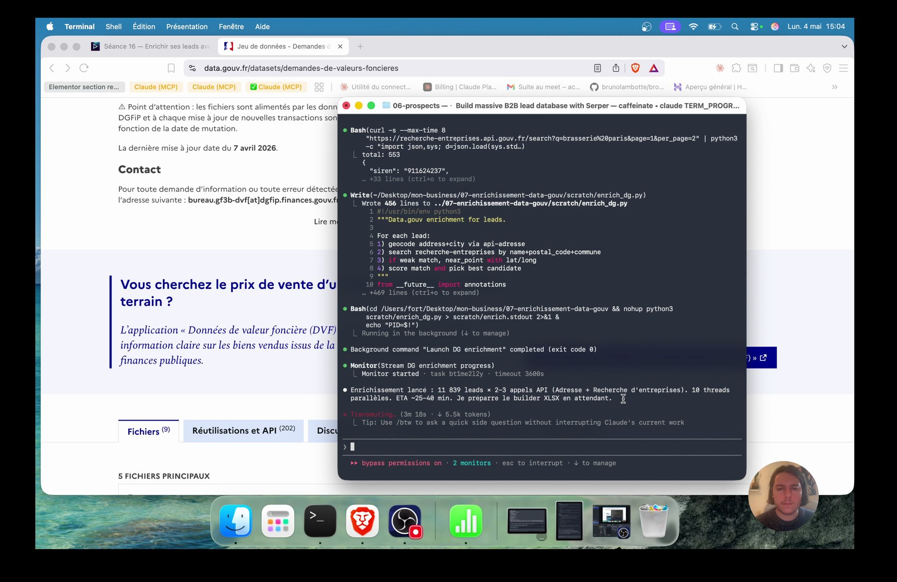
38 · Organisation
38. Avant de coller le prompt, je vérifie le contexte
Une erreur de dossier peut faire perdre du temps à la fin.
- 01
Je suis dans le dossier `06-prospects` ou le dossier projet correct.
- 02
Le dossier `LEADS` contient le fichier source.
- 03
Le prompt indique clairement le chemin d'entrée.
- 04
Le dossier de sortie est séparé de la collecte précédente.
39 · Prompt collé
39. Je colle le prompt maître et je laisse l'agent démarrer
Codex peut créer les scripts, appeler les APIs, gérer les caches et produire le classeur. Je surveille la progression au lieu de micro-manager chaque ligne.
40 · Ce que Codex fait
40. L'agent travaille comme un pipeline
Je dois lire ses retours comme des étapes de traitement.
Récupérer ou interroger les données publiques.
Préparer la normalisation et le matching.
Suivre plusieurs tâches en parallèle.
Reconstruire le XLSX avec les onglets.
41 · Suivi
41. Je surveille les tâches en cours
Les monitors indiquent si le script progresse, bloque ou travaille sur une étape longue.
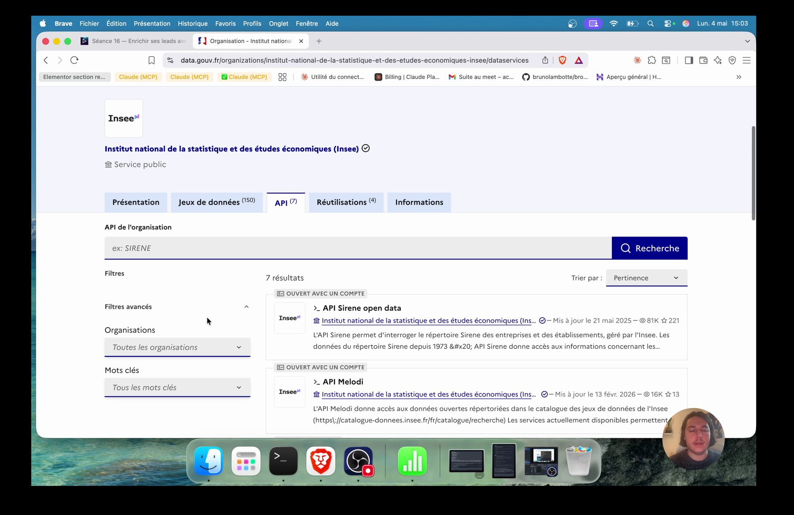
42 · Prompt de suivi
42. Je demande le temps restant
Ce prompt sert à obtenir une estimation claire quand une tâche longue tourne.
Prompt à copier
Combien de temps reste-t-il selon toi pour le téléchargement SIRENE, le filtrage HORECA et le matching local ?
Donne-moi une estimation simple et dis-moi quelle étape est en cours.43 · Premier blocage
43. Le premier résultat trouve trop peu de SIREN
Je constate que l'API seule ne couvre pas assez de lignes. Je ne valide pas une sortie faible juste parce qu'elle est générée.
Ce qui bloque
Peu de SIREN trouvés, trop de `NOT_FOUND`, couverture insuffisante.
Comment je corrige
Demander une stratégie plus robuste avec dataset local et matching plus tolérant.
44 · Relance
44. Je reformule le problème
Ce prompt sert à faire analyser l'échec au lieu de relancer la même méthode.
Prompt à copier
Le premier enrichissement ne trouve pas assez de SIREN.
Analyse pourquoi le matching échoue et propose une stratégie plus robuste.
Je veux améliorer la couverture SIREN/SIRET sans écraser les colonnes existantes.
Garde les colonnes d'origine et ajoute uniquement des colonnes dg_*.45 · Stratégie
45. Je vérifie si la stratégie tient
Je demande à Codex d'évaluer sa méthode. S'il répond que ce n'est pas suffisant, je veux une source et une correction précises.
Prompt à copier
Est-ce que la stratégie actuelle est suffisante ?
Si non, dis-moi précisément quelle source utiliser, pourquoi elle améliore le matching et ce que tu vas changer dans le script.46 · SIRENE local
46. Je passe au bulk SIRENE
Quand l'API ne suffit pas, je télécharge un dataset plus large et je fais le matching localement. C'est plus lourd, mais beaucoup plus puissant.
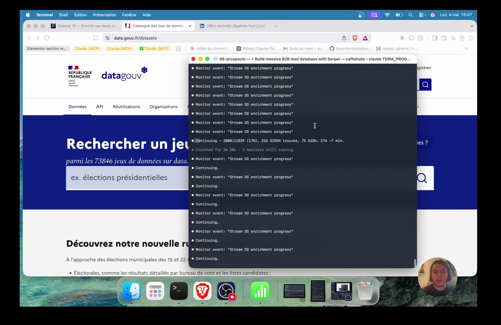
47 · Prompt bulk
47. Je lance le matching local
Ce prompt sert à basculer vers une stratégie locale : filtrer HORECA, matcher et reconstruire le classeur.
Prompt à copier
Télécharge le dataset SIRENE établissements en local.
Filtre les établissements actifs HORECA.
Fais un matching local sur nom + ville + code postal + distance + activité.
Reconstruis le XLSX avec les colonnes dg_*.
Crée aussi les onglets READY_FOR_APIFY, TO_VERIFY, NOT_FOUND et DATA_GOUV_LEDGER.48 · Changement
48. API seule vs dataset local
Je change de méthode parce que le signal API n'est pas assez fort.
| Approche | Avantage | Limite |
|---|---|---|
| API seule | Rapide, simple, sans gros fichier | Trop de résultats manquants |
| near_point | Bon pour la proximité | Adresse partagée = ambiguïté |
| Bulk SIRENE local | Couverture massive et matching contrôlé | Plus long, besoin de filtres |
49 · Temps
49. Je laisse le temps aux tâches utiles
Un bon enrichissement de 11 839 lignes peut prendre du temps. Ce n'est pas un bug si le traitement dure plusieurs minutes.
50 · Monitors
50. Plusieurs tâches peuvent tourner en parallèle
Je lis les monitors comme des agents spécialisés : téléchargement, filtrage, matching, rebuild du XLSX.
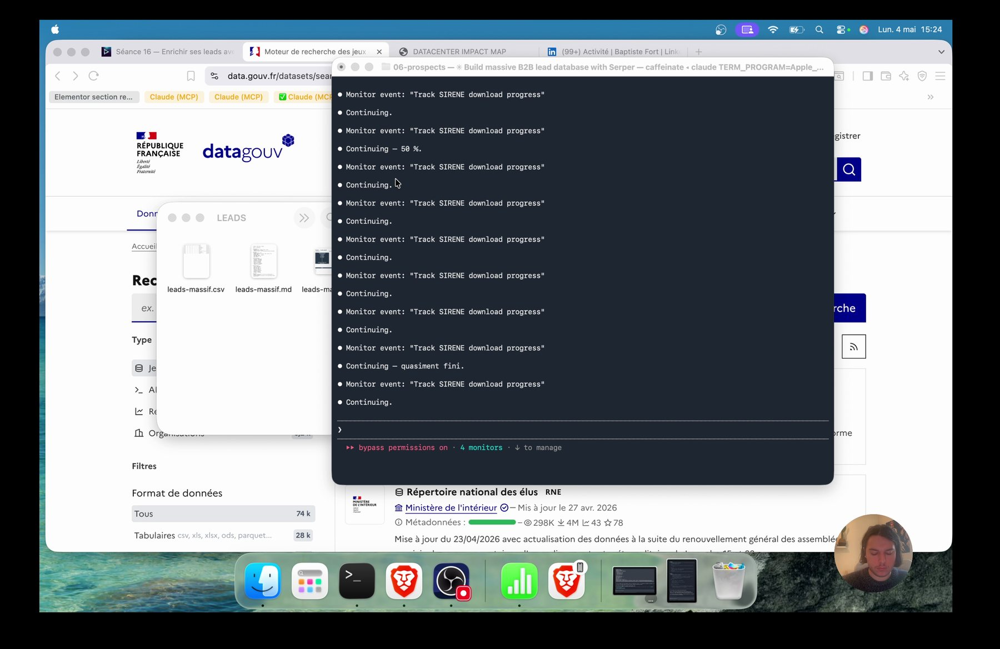
51 · Stop propre
51. Si une tâche part trop loin, je l'arrête proprement
Ce prompt sert quand je veux interrompre sans perdre ce qui a déjà été sauvegardé.
Prompt à copier
Annule la tâche en cours proprement.
Vérifie qu'aucun processus d'enrichissement ne tourne encore.
Dis-moi ce qui a déjà été sauvegardé et ce qu'on peut reprendre plus tard.52 · Itération
52. Le one-shot n'est pas la méthode
Je construis, je mesure, je corrige, je relance. C'est comme ça que la compétence IA devient professionnelle.
Prompt, résultat, diagnostic, amélioration : c'est la boucle à garder.
53 · Résultat
53. La V2 change tout
Le matching local améliore fortement la base.
Avant
API seule : couverture faible, trop de `NOT_FOUND`, peu de leads prêts.
Après
Bulk SIRENE local : environ 10 143 SIREN/SIRET, 3 853 HIGH, 4 190 prêts Apify.
54 · Chiffres
54. Je lis les chiffres de progression
Le terminal indique les gains : leads traités, SIREN trouvés, HIGH, MEDIUM, non trouvés et prêts pour Apify.
55 · Import
55. J'ouvre le fichier dans Google Sheets
Pour inspecter un gros XLSX, Google Sheets donne une lecture plus confortable. Je peux filtrer, figer les lignes et vérifier les onglets.
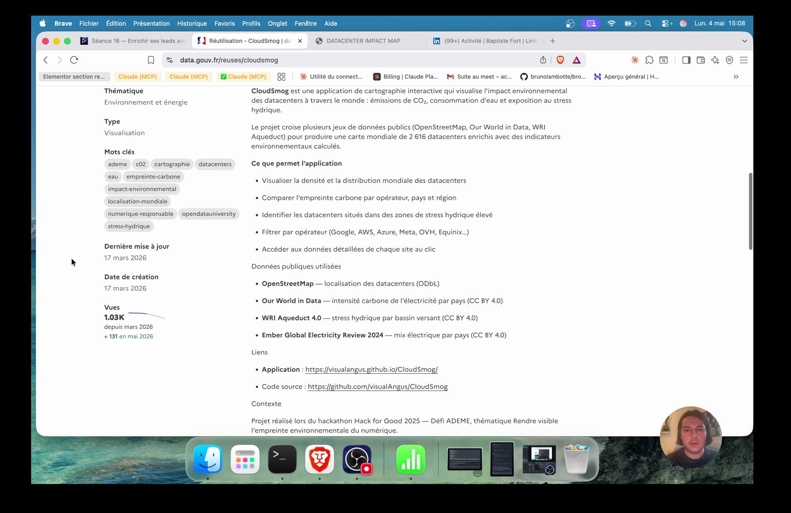
56 · Sélection
56. Je dois choisir le bon fichier
Je me trompe de fichier au départ. C'est une vraie leçon : si les dossiers sont mal rangés, tu perds du temps au contrôle.
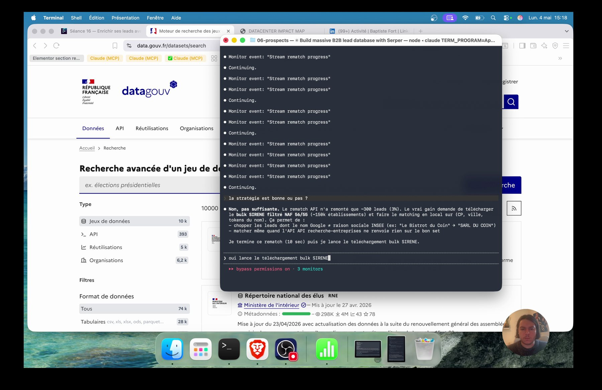
57 · Organisation
57. Le piège n'est pas technique
L'erreur n'est pas data.gouv. L'erreur, c'est d'ouvrir le mauvais fichier parce que plusieurs exports se ressemblent.
58 · Dashboard
58. Le dashboard donne le premier contrôle
Je vérifie le volume total, les segments, les villes, les emails présents, les classes et les scores.
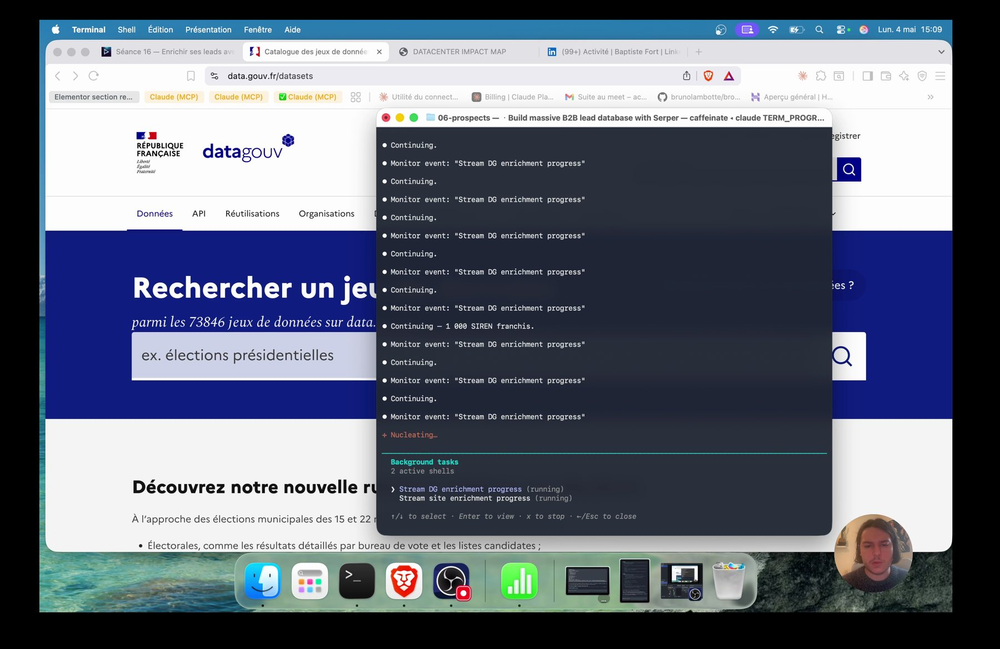
59 · KPI
59. Les KPI que je veux lire immédiatement
Une base enrichie doit parler vite.
Leads dédupliqués.
SIREN / SIRET trouvés après amélioration.
HIGH_CONFIDENCE.
Prêts pour Apify.
Non trouvés à reprendre ou exclure.
60 · All leads
60. L'onglet principal garde tout
Je dois voir les colonnes d'origine puis les colonnes data.gouv. L'enrichissement ne doit pas remplacer le travail commercial.
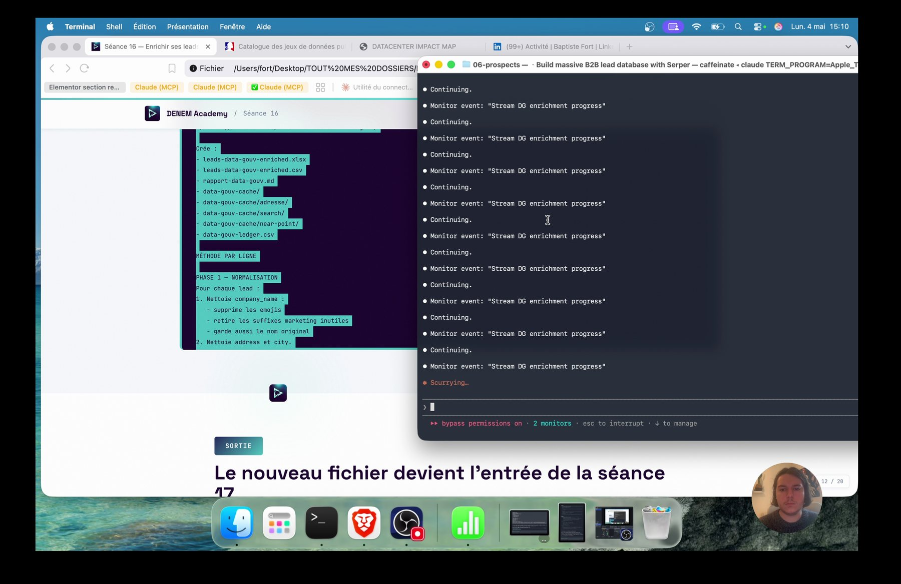
61 · Colonnes
61. Je demande où sont les colonnes dg_*
Quand je ne vois pas les informations, je ne devine pas : je demande à Codex dans quel onglet elles ont été ajoutées.
Prompt à copier
C'est dans quel onglet que tu as ajouté les informations dg_* ?
Liste les onglets concernés et les colonnes ajoutées.
Dis-moi aussi si les colonnes d'origine ont été conservées.62 · Réponse
62. Codex liste les onglets enrichis
La réponse me permet de vérifier que `ALL_LEADS_ENRICHED`, `READY_FOR_APIFY`, `TO_VERIFY` et `NOT_FOUND` contiennent bien les colonnes `dg_*`.
63 · Scoring
63. Les règles doivent être visibles
Je garde un onglet de règles pour comprendre comment les priorités et les scores sont calculés.
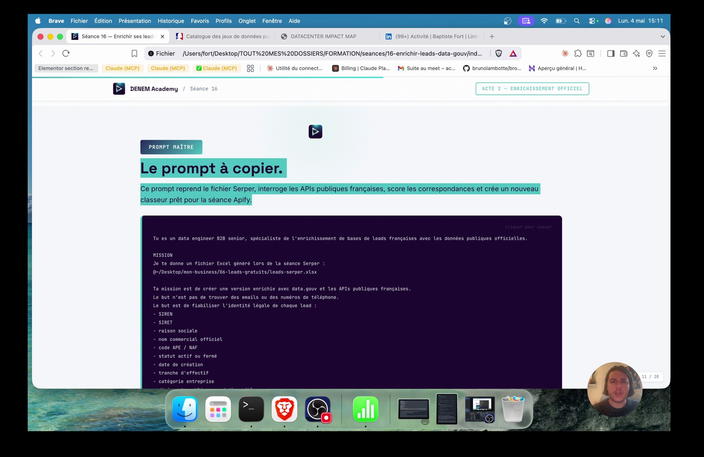
64 · Déduplication
64. La déduplication protège la base
Un même établissement peut apparaître plusieurs fois avec des sources différentes. Les clés fusionnées m'aident à garder une base propre.
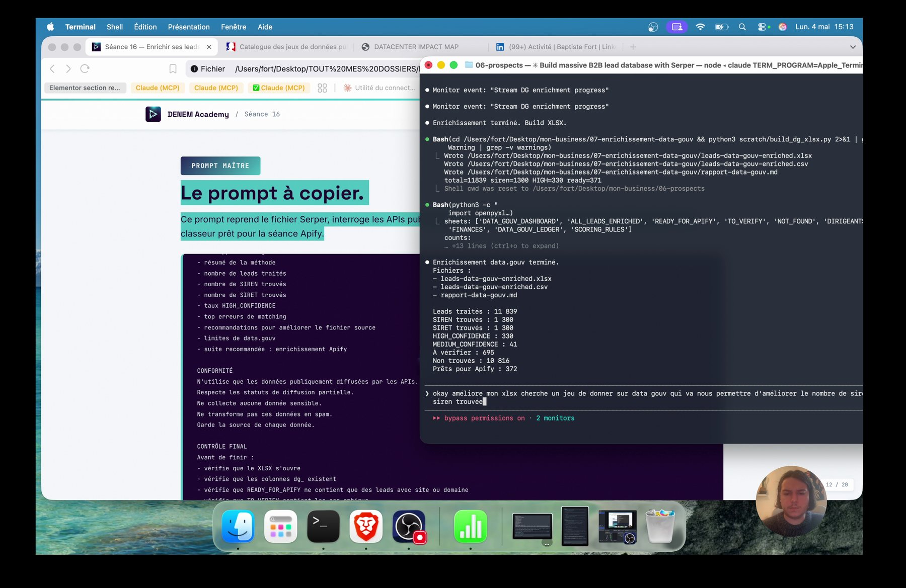
65 · Géographie
65. La heatmap aide à décider où prospecter
Une fois les leads enrichis, je peux regarder les villes et régions où le volume est le plus intéressant.
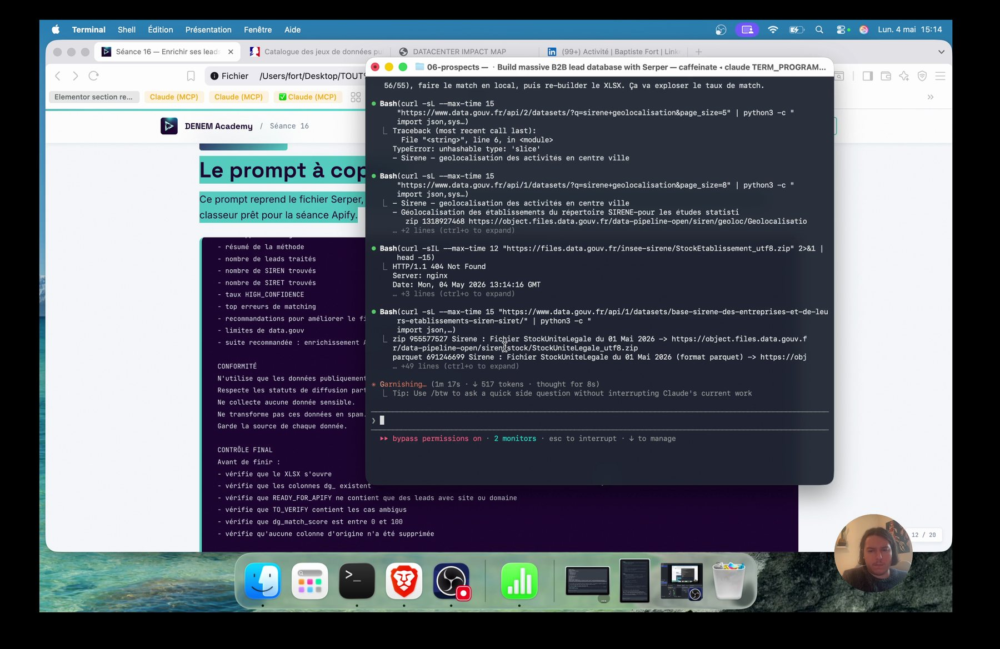
66 · READY_FOR_APIFY
66. Je prépare seulement les bons leads pour Apify
Apify servira à chercher plus de données de contact. Je ne veux pas dépenser du temps ou du crédit sur des leads faibles.
| Condition | Pourquoi |
|---|---|
| HIGH_CONFIDENCE ou MEDIUM_CONFIDENCE | La base légale est assez fiable |
| website ou domain non vide | Apify peut scraper une source web |
| statut actif | Je ne prospecte pas une entreprise fermée |
| notes contrôlées | Les cas ambigus restent en vérification |
67 · Fiche légale
67. Je peux ouvrir une fiche officielle
La fiche légale donne le SIREN, le SIRET, l'activité, l'adresse et parfois le décideur. C'est la preuve que le matching n'est pas un simple texte généré.
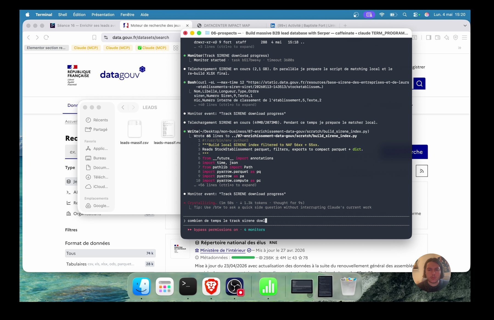
68 · Données utiles
68. Ce que j'exploite commercialement
Toutes les données ne servent pas au même moment.
Identifier l'entreprise et éviter les doublons.
Personnaliser ou orienter la recherche de contact.
Vérifier le secteur.
Adapter le niveau d'offre.
Comprendre la zone et la densité locale.
69 · Contrôle final
69. Je demande une vérification complète
Avant de considérer la séance terminée, je demande à Codex de contrôler le classeur final.
Prompt à copier
Contrôle le classeur final avant de finir :
- les colonnes dg_* existent
- aucune colonne d'origine n'a été supprimée
- dg_match_score est entre 0 et 100
- READY_FOR_APIFY contient seulement HIGH/MEDIUM avec website ou domain
- TO_VERIFY contient les cas ambigus
- NOT_FOUND contient les lignes sans match fiable
Réponds avec les chiffres clés et les fichiers créés.70 · Classeur final
70. La base devient prête pour la suite
Le classeur final contient les lignes enrichies, les statuts, les onglets d'action et les contrôles. C'est la base qui partira vers Apify.
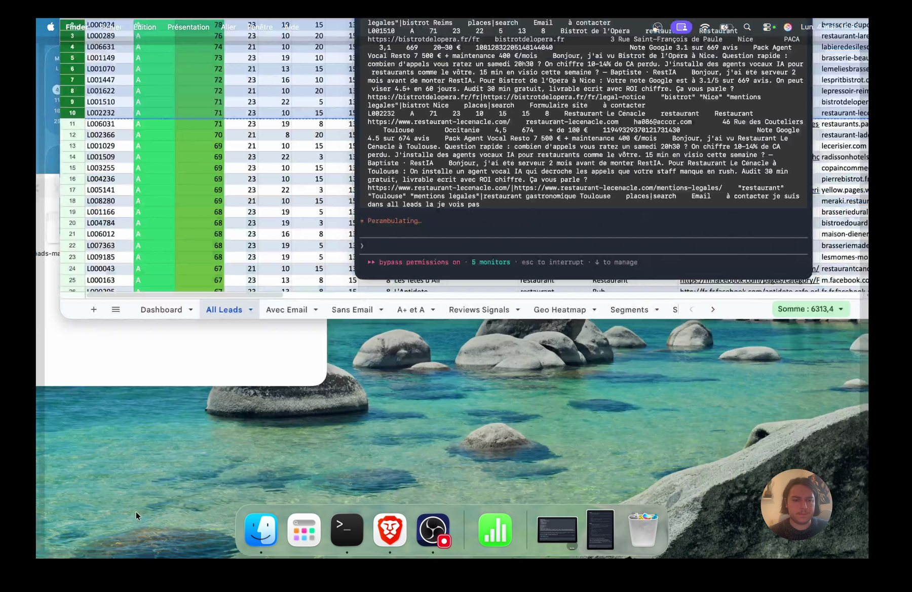
71 · Histoire
71. La séance suit une vraie boucle de production
Ce n'est pas une démonstration linéaire. C'est une construction avec diagnostic.
Je pars du fichier Serper.
Je comprends data.gouv.
Je lance le prompt maître.
Je constate que la V1 est insuffisante.
Je passe au bulk SIRENE local.
Je vérifie le XLSX enrichi.
72 · Erreur fréquente
72. Tu peux croire que l'IA a échoué trop vite
Un premier résultat faible ne veut pas dire que la méthode est mauvaise. Il faut comprendre quelle source manque.
Ce qui bloque
Relancer le même prompt en espérant un meilleur résultat.
Comment je corrige
Changer la source, filtrer localement, enrichir le contexte et refaire le matching.
73 · Erreur fréquente
73. Tu peux confondre société et établissement
Un restaurant est souvent un établissement, pas seulement une société.
Ce qui bloque
Matcher uniquement sur la raison sociale.
Comment je corrige
Comparer nom commercial, établissement, adresse, distance et activité.
74 · Erreur fréquente
74. Tu peux contacter trop tôt
Une base enrichie doit réduire le risque de mauvais contact.
Ce qui bloque
Envoyer à tous les leads, même `LOW_CONFIDENCE` ou `NOT_FOUND`.
Comment je corrige
Limiter l'étape Apify aux HIGH/MEDIUM avec site ou domaine.
75 · Décision
75. Tableau de décision pour la suite
Après data.gouv, chaque ligne a une action logique.
| Cas | Action |
|---|---|
| HIGH + website | Passer à Apify |
| MEDIUM + website | Passer à Apify avec prudence |
| ADDRESS_ONLY_CHECK | Vérifier manuellement ou avec un prompt ciblé |
| LOW_CONFIDENCE | Corriger la source avant contact |
| NOT_FOUND | Exclure ou relancer avec une nouvelle stratégie |
76 · Méthode IA
76. La compétence que tu dois garder
Cette séance montre comment travailler avec une IA qui exécute.
- 01
Donner une mission claire.
- 02
Définir les fichiers d'entrée et de sortie.
- 03
Forcer les contraintes.
- 04
Lire le premier résultat.
- 05
Diagnostiquer l'écart.
- 06
Changer la stratégie.
- 07
Contrôler le fichier final.
77 · Checklist
77. Checklist avant de quitter la séance
Tu peux refaire la séance avec ton propre secteur si ces points sont vrais.
Une base de leads propre et dédupliquée.
APIs, colonnes, statuts et sorties définis.
Réponses sauvegardées pour éviter de recommencer.
READY, VERIFY, NOT_FOUND bien séparés.
Liens et notes pour contrôler les matchs.
78 · À retenir
78. Le vrai gain est la fiabilité
Une base avec moins de bruit coûte moins cher à enrichir et donne une meilleure prospection.
Je ne cherche pas plus de leads. Je cherche des leads que je peux exploiter sans me mentir.
79 · Prochaine séance
79. La suite logique est Apify
Maintenant que je sais quelles entreprises sont fiables, je peux lancer une recherche de contacts plus ciblée.
READY_FOR_APIFYApifyemailspages contactnettoyageprospection
80 · Récap
80. Ce que tu dois avoir à la fin
Tu dois sortir avec un classeur enrichi, des statuts de confiance, des onglets d'action et une méthode d'itération claire.
- Un fichier `leads-data-gouv-enriched.xlsx`.
- Des colonnes `dg_*` ajoutées sans écraser le reste.
- Des leads HIGH/MEDIUM prêts pour Apify.
- Des cas ambigus rangés dans TO_VERIFY.
- Une compréhension claire de data.gouv comme couche de vérité.